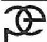

Boiler and Pressure Vessel Legislation
3
Learning Outcome
When you complete this learning material, you will be able to:
Describe the components and applications of boiler and pressure vessel legislation that are common within Canadian jurisdictions.
Note: The term Boilers and Pressure Vessels Act shall also mean Safety Code Act , Safety Standard Act , Public Safety Act , and Technical Standards and Safety Act .
Learning Objectives
You will specifically be able to complete the following tasks:
- 1. Identify the types and sources of laws and the levels and scope of the courts.
- 2. Define statutory delegation of powers as they apply to the Boilers and Pressure Vessels Act .
- 3. Describe the authority that safety officers (inspectors) have within their jurisdiction.
- 4. Determine what are the offences and penalties under the Act and the appeal process.
- 5. Describe the typical regulations under the Boilers and Pressure Vessels Act .
- 6. Describe the typical codes and standards referenced by the Boilers and Pressure Vessels Act .
INTRODUCTION TO THIS MODULE
This module is to be read in conjunction with the Boilers and Pressure Vessels Act from the province or other jurisdiction in which the candidate is studying and will be examined. Should your career take you to another province or jurisdiction, it is your responsibility to make yourself aware of the Act and Regulations that apply in the province or other jurisdiction to which you move.
This module has been written to give the Second Class Power Engineering candidate a wider appreciation of the laws that govern the roles and responsibilities of a Power Engineer.
The Second Class Power Engineering candidate should know what he/she is legally responsible for both directly and indirectly, and also what the penalties are for contravening these laws.
The Second Class Power Engineer should have a good working knowledge and understanding of the codes and standards included with the provincial legislation in their jurisdiction. Most Power Engineers are conversant with ASME Section I, CSA B51 and B52, but there are many other codes and standards that directly apply to Power Engineering.
Objective 1
Identify the types and sources of Laws and the levels and scope of the Courts
TYPES OF LAW
As Power Engineers, we know that the provincial Boilers and Pressure Vessels Act and the Regulations under the Act give our positions and responsibilities to us. To us the Act is law. When we think of the law we seldom think of types of law. However, it is important to differentiate between the various types of law. There are four main types of law that are of interest to safety services and Power Engineering personnel — constitutional law, civil law, criminal/quasi-criminal/regulatory law, and administrative law. Each of these will be considered in turn.
Constitutional Law
Constitutional law involves the law as it relates to relationships between the various legal components that exist in Canada. For example, constitutional law considers the powers of the federal government, provincial governments, and local authorities such as municipal governments.
Civil Law
Civil law may be defined as private law, which exists between parties:
...civil law is often referred to not as a system, but as, essentially, private law. In this sense, civil law is often contrasted with criminal law. In the latter context, the civil law refers to, for example, rights and remedies in connection with the law of contracts, torts, and real property. In other words, here, the civil law is concerned with rights and duties in connection with one's fellow citizens in a private capacity. This is contrasted with criminal law, which is concerned with the rights and duties enjoyed by the subject in connection with the state. (Gall, 25)
Criminal/Quasi-Criminal/Regulatory Law
Law that may be termed criminal , quasi-criminal , or regulatory is law which involves offences "against the state, against the people and against the public interest." (Gall, 20) Technically speaking, criminal law is the law that is found in the Criminal Code of Canada. Quasi-criminal law is law that involves penal consequences (such as imprisonment and/or a fine). This includes a variety of laws ranging from the federal
Narcotics Control Act to provincial acts, such as the Boilers and Pressure Vessels Act , Alberta's Safety Codes Act , and B.C.'s Safety Standards Act .
Administrative Law
The study of safety services law has traditionally focused on civil law, with some consideration given to criminal and quasi-criminal law. Another area of law that plays an important role with respect to safety services and Power Engineering is administrative law. Administrative law has been defined as follows:
Administrative law deals with the legal limitations on the actions of governmental officials, and on the remedies available to anyone affected by a transgression of these limits. The subject invariably involves the question of the lawful authority of an official to do a particular act which, in the absence of such authority, might well be illegal (or ultra vires ) and give rise to an actionable wrong. (Jones and de Villars, 3)
Ultra vires is a legal term which means: beyond a person's power or authority.
SOURCES OF LAW
Each type of law discussed above comes from a variety of sources. Generally, the law comes from two primary sources: legislation and the courts. The body of law derived from legislation is termed statute law while the courts create common law or case precedent law . Each of these sources of law is considered below.
Legislative
There are two principal types of legislation that are of concern to safety services and Power Engineering personnel: primary and subordinate legislation.
Primary Legislation
The legislative body as a whole enacts primary legislation. Primary legislation is usually called an Act . The Boilers and Pressure Vessels Act is primary legislation which has been enacted by the legislature.
Subordinate Legislation
Subordinate legislation is legislation that an act allows to be enacted by a body subordinate to the legislative body. This subordinate legislation comes in a variety of forms including regulations, orders-in-council, municipal bylaws, etc. The nature and purpose of subordinate legislation is well summarized by one authority, as follows:
In recent years there has been a major proliferation of legislative enactments at all levels of government. Because Parliament and the various provincial legislatures cannot possibly deal with every matter, and indeed lack the requisite expertise to do so, a common legislative practice is for the sovereign legislative body, be it Parliament or a provincial legislature, to enact governing enabling legislation. Under that enabling legislation, the power to make statutory
instruments—orders in council, regulations, by-laws, etc.— is delegated to an inferior body. That inferior body may be the cabinet, a minister of the cabinet, an administrative tribunal, a municipal council, or one of the many other forms of inferior legislative authority. The inferior body may then enact subordinate legislation, in accordance with its terms of reference as set out in the enabling statute. In doing so, it may not, of course, exceed its jurisdiction as provided in the enabling statute. (Gall, 38)
Regulations
Of particular interest to safety services and Power Engineering personnel is subordinate legislation passed under the authority of the Boilers and Pressure Vessels Act or Safety Codes Act as regulations. For example, Section 61 of the Alberta Safety Codes Act empowers the lieutenant-governor of Alberta in Council (provincial cabinet) to pass regulations relating to a wide range of subjects under the Act.
Municipal Bylaws
Every province and territory in Canada has created local governments, commonly called municipalities, which are empowered to carry out such government functions as the provincial/territorial legislation allows. This includes the power to pass legislation with respect to local government matters. This legislation is known as municipal bylaws, and is of the same force and effect as provincial/territorial legislation. Examples of this type of legislation include municipal land use bylaws and fire and emergency services bylaws.
Judicial
Interpretation of Legislation
The first role of the courts is to interpret the legislation enacted by legislators. Despite the best attempts of legislative draftsmen to make the intentions of legislators clear, the application of the legislation to individual fact situations often leaves certain elements of the legislation open to more than one interpretation. A classic example of interpretation occurred when the Canadian Charter of Rights and Freedoms was introduced into the Canadian Constitution in 1982. At the time of its introduction, there was considerable controversy about whether the charter applied to all matters in Canada, both public and private sector, or only to matters involving governments. Eventually, the courts were called upon to resolve the issue, with the Supreme Court of Canada adopting the narrower interpretation of the application of the charter, which saw it as applying only to government affairs. Thus, when reading legislation, it is also important to review case law to determine how the courts have interpreted that legislation.
Common Law
The second role of the courts is to create law where legislation does not exist. This most often occurs in civil law, such as contract law, tort law, etc. This is known as the common law, and is found solely in the case law. For example, the legal right for a person to sue a government officer for actions taken by the officer during his or her employment will not be found in the Boilers and Pressure Vessels Act . The authority for
such action is found in the legal principle of tort set down by the courts in many cases over the years. The principle holds that if the actions of an individual, corporation, or government cause injury or damage to another person (not arising as the result of a contract) and that injury or damage may be compensated for, the injured or damaged party should be compensated for his or her loss by the party who caused the loss.
CONSTITUTIONAL FOUNDATION
Definition of Constitutional Law
Constitutional law has been defined as
...the law prescribing the exercise of power by the organs of a State. It explains which organs can exercise legislative power (making new laws), executive power, (implementing the laws) and judicial power (adjudicating disputes) and what the limitations on those powers are. (Hogg)
Another authority further describes constitutional law as follows:
In its broadest sense, Constitutional Law comprises all of the fundamental rules for determining who and which institutions have the right to make laws for the government of our society; it is 'a law for the making of laws'. (Jones and de Villars)
The Constitution in Canada
Constitutional parameters are contained in the constitution of a country. In Canada, as in Great Britain, the constitution is a set of laws and principles contained in a number of documents. The United States of America, on the other hand, has a single document with several amendments. In Canada, the documents making up the constitution are defined in the Constitution Act, 1982 (Section 52(2)) which says:
The Constitution of Canada includes:
- (a) The Canada Act 1982, including this Act;
- (b) The Acts and Orders referred to in the schedule; and
-
(c) Any amendments to any Act or order referred to in paragraph (a) or (b).
( Constitution Act, 1982 )
The Canada Act 1982 is an Act of the Parliament of Canada, which assumed the power previously held by the Parliament of the United Kingdom to legislate for Canada. A schedule to this Act is the Constitution Act, 1982 that contains the Canadian Charter of Rights and Freedoms , an important document for legislators and enforcement officials as all subordinate laws and associated regulations must be in harmony with this aspect of constitutional law.
The schedule to the Canada Act 1982 , among other acts and orders-in-council, contains the Constitution Act, 1867 (the British North America Act, 1867 ) which is still the
document that distributes power between the federal Parliament and provincial legislatures. The amendments include any amendments made to the Canada Act 1982 or the Constitution Act, 1982 .
A constitution is the authoritative law of a country with which all other laws must be in harmony and to which all other laws are subordinate. A constitution is therefore characterized as the supreme law of a country. Because changes to the constitution will have far-reaching effects, the process for change is complex. As this document is resistant to change, it is said to be entrenched .
Powers Of the Legislative Bodies
The Constitution Act, 1867 recognizes two levels of government in Canada and prescribes the powers that each may exercise. Thus, the federal Parliament under Section 91, has certain prescribed powers, while the jurisdiction of the provincial legislatures is described in Sections 92 to 126. The authority for provincial jurisdiction of fire, emergency, and safety services is found in several subsections of Section 92:
- 92 In each Province, the Legislature may exclusively make Laws in relation to Matters coming within the Classes of Subject next hereinafter enumerated; that is to say,
- 5 The Management and Sale of the Public Lands belonging to the Province and of the Timber and Wood thereon. ...
- 10 Local Works and Undertakings other than such as are of the following Classes: -
- (a) Lines of Steam or other Ships, Railways, Canals, Telegraphs and other Works and Undertakings connecting the Province with any other or others of the Provinces, or extending beyond the limits of the Province;
- (b) Lines of Steam Ships between the province and any British or Foreign country;
- (c) Such Works as, although wholly situated within the Province, are before or after their Execution declared by the parliament of Canada to be for the general Advantage of Canada or for the Advantage of Two or more of the Provinces. (National parks, Military Bases and Canada Post.) ...
- 13 Property and Civil Rights in the Province. ...
- 15 The Imposition of Punishment by Fine, Penalty, or Imprisonment for enforcing any law of the Province made in relation to any matter coming within any of the Classes of Subjects enumerated in this Section.
-
16 Generally all Matters of a merely local or private Nature in the Province.
( Constitution Act, 1867 )
While the division of powers outlined in the Constitution Act, 1867 is quite extensive, there are situations not covered by the Act. These left over, or residual, areas of responsibility are addressed by the concept of residual powers . Two categories are identified: federal residual powers and provincial residual powers.
In the preamble to Section 91 of the Constitution Act, 1867 , powers are given to the federal Parliament "to make laws for the Peace, Order and Good Government of Canada." The courts have developed three tests for this POGG power , one of which must be met to give the federal government the authority in the matter.
- 1. Gap Test: If there is a gap in the constitutional distribution of powers, this test can apply. It requires that the matter under consideration fall partly within an existing Class of Subject as already discussed. However, it also requires that the Class of Subject fails to deal completely with the matter. An example is the constitutional jurisdiction of provinces with respect to the incorporation of companies with provincial objects. No such statement is made for federal jurisdiction for companies with federal objects, but the courts have held this test to justify the federal jurisdiction in this matter.
- 2. National Concern Test: Matters of national, rather than provincial, concern not covered by the Constitution fall under federal jurisdiction if this test is met. An example of this is that aeronautics (air travel), which is not specifically addressed in the Constitution, is a matter of national concern and therefore should fall under federal jurisdiction.
- 3. Emergency Test: The federal government can use the POGG principle in cases of emergency. An example of the use of this power is court support for the authority to enact emergency legislation, which has included the War Measures Act and the Anti-Inflation Act .
Provincial residual power is found in Subsection 92(16) of the Constitution Act, 1867 which states
- 92 In each Province the Legislature may exclusively make Laws in relation to Matters coming within the Classes of Subject next hereinafter enumerated; that is to say ...
-
16 Generally all Matters of a merely local or private Nature in the Province.
( Constitution Act, 1867 )
Municipal Governments
Other levels of government are not mentioned in the Constitution, except for the provision in Subsection 92(8), which provides that provincial legislatures may create "municipal institutions in the province." These municipal institutions have been interpreted by the courts as local governmental bodies concerned with the needs, health,
safety, comfort, and orderly government of organized communities. They are generally referred to as local public authorities. Examples of such municipal institutions include municipalities, school boards and districts, regional public health boards, and other administrative boards, commissions, councils, and tribunals.
Municipal institutions, as subordinate governmental bodies, have powers subordinate to the provincial legislature. One of the powers given to municipal governments is the power to pass bylaws, which is legislation subordinate to provincial enactments. Typical examples can be found in the various Boilers and Pressure Vessels Acts , such as:
A bylaw of a municipality that purports to regulate a matter that is regulated by this act is inoperative.
Notwithstanding this provision, the act often goes on to state that municipalities can make bylaws "respecting the carrying out of its powers and duties as an accredited municipality."
Corporations
Authority for code compliance monitoring can be granted to corporations to manage. Examples include the Alberta Boiler Safety Association (ABSA,) British Columbia Safety Association (BCSA,) and the Technical Standards and Safety Association (TSSA, which is in Ontario.)
This places such organizations in a similar position to municipalities, although their authority is not derived by specific reference in the Constitution. Rather, it is derived under the provision in the Constitution allowing provinces the jurisdiction for "the incorporation of companies with provincial objects." The suggestion is that such companies are creatures of the provincial government and can therefore be assigned powers within provincial jurisdiction although, in practice, a corporation does not have to be incorporated under provincial law.
THE COURT SYSTEM
The structure of the Canadian legal system is established by the Constitution, which allows for the following classification of courts for the administration of justice.
PROVINCIAL COURTS
The power over the administration of justice in the provinces is given to the provinces by Section 92(14) of the Constitution Act, 1867 which states:
- 92 In each Province the Legislature may exclusively make laws in relation to Matters coming within the Classes of Subject next hereinafter enumerated; that is to say, ...
- 14 The Administration of Justice in the Province, including the Constitution, Maintenance, and Organization of Provincial Courts, both of Civil and of
Criminal Jurisdiction, and including Procedure in Civil Matters in those Courts.
(
Constitution Act, 1867
)
Every province has used this power to enact legislation establishing provincial courts and to appoint judges to these courts. Provinces have divided the provincial court into specialized divisions. Of particular interest to safety services and Power Engineering personnel are the civil division (often called small claims court) and the criminal division.
Civil Division
Subject to a number of exceptions, the jurisdiction of the civil division of the provincial court may include claims for damages and/or debt not exceeding $4,000 (the dollar amount may vary).
Criminal Division
The jurisdiction of the criminal division of the provincial court that is of interest to safety services and Power Engineering personnel includes the following areas:
- a) offences under provincial legislation
- b) summary conviction offences
- c) indictable offences under Section 553 of the Criminal Code
- d) indictable offences by election of a Jury or by the judge alone
- e) preliminary hearings
SUPERIOR COURTS
While Section 92(14) of the Constitution Act, 1867 grants power over the administration of justice to the provinces, Section 96 grants to the federal Parliament the power to appoint the judges of the superior courts in each province:
-
96 The Governor General shall appoint the Judges of the Superior, District, and County Courts in each province, except those of the Courts of Probate in Nova Scotia and New Brunswick.
( Constitution Act, 1867 )
COURT OF QUEEN'S BENCH
Such courts are often collectively called Section 96 Courts and operate as the Court of Queen's Bench. The jurisdictional scope of the Court of Queen's Bench is broad. The following areas are of interest to safety services and Power Engineering personnel:
- a) indictable offences under Section 469 of the Criminal Code of Canada .
- b) indictable offences by election (jury or judge alone)
- c) appeals of summary conviction offences
- d) all civil matters in excess of $4,000
- e) appeals from small claims court
- f) administrative law jurisdiction with respect to applications for judicial review or statutory rights of appeal of administrative decisions
COURT OF APPEAL
The superior provincial appeal court is the Court of Appeal. The jurisdiction of the Court of Appeal that is of interest to safety services and Power Engineering personnel includes those listed below:
- a) appeals of all criminal cases
- b) appeals of all civil matters
- c) applications for new trials
- d) appeals of administrative law decisions with respect to applications for judicial review or statutory rights of appeal of administrative decisions
FEDERAL COURTS
Section 101 of the Constitution Act, 1867 provides:
The Parliament of Canada may, notwithstanding anything in this Act, from Time to Time provide for the Constitution, Maintenance and Organization of a General Court of Appeal for Canada, and for the Establishment of any additional Courts for the better Administration of the Laws of Canada.
(
Constitution Act, 1867
)
Pursuant to this power, the federal Parliament has established many judicial bodies, including the Federal Court of Canada and the Supreme Court of Canada.
Federal Court of Canada
The Federal Court of Canada, which replaced the Exchequer Court of Canada, was established by the federal Parliament to hear certain matters which fell within federal constitutional jurisdiction. The Federal Court of Canada consists of a trial and an appeal division, which are staffed by 14 federally appointed justices, one of whom serves as the chief justice of the court.
The jurisdiction of the trial and appeal divisions of the Federal Court of Canada is summarized next.
Trial Division
The jurisdiction of the trial division of the Federal Court of Canada, which is of interest to safety services and Power Engineering personnel, includes the following:
-
a) Exclusive jurisdiction with respect to:
- i) claims against the Crown;
- ii) granting equitable relief against any federal board, commission, or other tribunal;
-
- iii) hearing matters of copyright, trademark, industrial design, and patents of invention; and
- iv) applications for writs in relation to anyone in the Canadian Armed Forces stationed outside Canada.
-
b) Residual jurisdiction regarding:
- i) matters where no other Canadian court has jurisdiction; and
- ii) matters within the jurisdiction of the Federal Court which are not specifically assigned to the appeal division.
-
c) Shared (concurrent) jurisdiction with other courts over the following:
- i) admiralty;
- ii) aeronautics;
- iii) claims against officers or servants of the Crown for acts or omissions committed in carrying out their duties;
- iv) Crown claims; and
- v) interprovincial works and undertakings.
Appeal Division
The jurisdiction of the appeal division of the Federal Court of Canada, which is of interest to safety services, includes the following areas:
- a) appeals from the trial division of the Federal Court
- b) applications to renew and set aside decisions of federal administrative tribunals such as boards and commissions
- c) reference cases with respect to questions of law, jurisdiction, or practice referred by federal administrative tribunals
- d) statutory appeals under a variety of federal acts
Supreme Court of Canada
The Supreme Court of Canada was established in 1875. Appeals to the judicial committee of the Privy Council in Great Britain were abolished in 1949. Then, the Supreme Court of Canada assumed the role as the highest court of appeal for all criminal and civil law cases in Canada. The Supreme Court of Canada comprises nine federally appointed justices, one of whom serves as the chief justice of Canada. The jurisdiction of the Supreme Court of Canada differs between civil and criminal cases. Each of these jurisdictions is summarized below.
Civil Cases
Leave of the Supreme Court to appeal decisions of a provincial court of appeal is required. Such leave will only be given for matters of public importance, or important issues of law, or of mixed law and fact.
Criminal Cases
The Supreme Court may hear appeals from decisions of a provincial court of appeal with respect to the following types of offences:
-
a) indictable offences, with leave, on questions of law where there has been no dissenting opinion in the provincial court of appeal b) indictable offences, without leave, on questions of law where there has been a dissenting opinion in the provincial court of appeal c) summary conviction offences, with leave, on questions of law
Reference Cases
The Supreme Court of Canada also has the power to give opinions on constitutional and other matters which involve the factors listed below:
-
a) the interpretation of constitutional legislation b) the interpretation of federal and provincial legislation c) the jurisdiction of the federal Parliament and the provincial legislature d) any matter which is referred to the Supreme Court pursuant to the Supreme Court Act
Cases in which the opinion of the Supreme Court of Canada is sought with respect to these matters are known as reference cases or simply references . These cases are said to be referred to the Court for its consideration.
Objective 2
Define Statutory Delegation of Powers as they apply to the Boilers and Pressure Vessels Act.
STATUTORY DELEGATION OF POWERS
The federal, provincial, and territorial governments have delegated a wide range of powers with respect to safety services and Power Engineering personnel. Those entities that receive such delegated powers are referred to in legal terminology as statutory delegates .
The rationale for such delegation may include the following factors:
- a) The size of the business of government means that neither the federal Parliament nor the provincial/territorial legislatures can deal with everything.
- b) Many government activities are technical in nature, and legislation should contain only broad principles.
- c) The delegation of power to an administrator allows greater flexibility in applying broad statutory provisions to changing circumstances.
- d) Devising a general rule to deal with all cases may not be possible, and a solution thus may be more conveniently determined by the discretion of a delegate.
- e) The need for rapid governmental action may require a faster administrative response than the legislative amendment process can accommodate.
- f) Innovation and experimentation in solving social problems may not be possible if legislation is required.
- g) When a person or persons are required to apply legislation, then they must have legal authority to do so, and this authority is conveyed through delegation.
- h) Emergencies may require broad delegation of powers, respecting a wide range of matters, which legislation would normally address.
There are three types of functions concerning safety services that the federal, provincial, and territorial governments have delegated. A description of each function follows.
Legislative
Delegated legislative functions refer to the power to enact subordinate legislation, including the enactment of regulations by the federal, provincial, and territorial governments, and the enactment of bylaws by municipal governments.
Judicial
Delegated judicial functions are those powers that the federal, provincial, and territorial governments have given to the courts. A related function is commonly called quasi-judicial ; a function that is essentially judicial in nature but which is exercised by an appointed official or an administrative tribunal.
Administrative
Delegated administrative functions, often called executive functions, are functions involving the application and enforcement of the legislation, for example, auditing responsibilities, etc.
In addition, the powers delegated by the federal or provincial governments may be either mandatory or discretionary in nature. We may describe delegated powers that are mandatory in nature as duties imposed on the statutory delegate. The following is a delegation statement typical of various Boilers and Pressure Vessels Acts :
The Minister administers this Act but an accredited municipality and an accredited corporation shall provide for the administration of this Act in accordance with the order that designated it as an accredited municipality or corporation.
Mandatory powers may be recognized by the use of terminology such as "shall" and "must." Discretionary powers, as the term suggests, allow statutory delegates to use their discretion in the exercise of their delegated powers. The Boilers and Pressure Vessels Act allows safety officers (inspectors) to exercise discretion and take actions they consider necessary to remove or reduce imminent serious dangers to persons or property regarding anything the Act applies to or due to a fire hazard or risk of explosion. Generally an act has a paragraph that states:
If a safety officer (inspector) is, on reasonable and probable grounds, of the opinion that there is an imminent serious danger to persons or property because of any thing, process or activity to which this Act applies or because of a fire hazard or risk of an explosion, the officer may take any action that the officer considers necessary to remove or reduce the danger.
We identify discretionary powers by terms such as "may" or "discretion."
Objective 3
Describe the authority that Safety Officers (Inspectors) have within their jurisdiction.
LIABILITY
As stated previously
If a safety officer (inspector) is, on reasonable and probable grounds, of the opinion that there is an imminent serious danger to persons or property because of any thing, process or activity to which this Act applies or because of a fire hazard or risk of an explosion, the officer may take any action that the officer considers necessary to remove or reduce the danger.
This statement gives the safety officer (inspector) wide-ranging powers, which must be executed with care. An organization that has this responsibility also has the imposition of the neighbourhood principle referred to as a duty of care .
ELEMENTS OF LIABILITY FOR NEGLIGENCE
Three interlocking items are at the heart of any civil action. An analogy of a three-legged milking stool is often used to explain the interrelationship of these elements. Just as the stool will only stand with all three legs securely in place, a lawsuit balances on the same precarious structure. If all three elements are not in place in a lawsuit, it will not stand the scrutiny of the courts. The three elements are duty of care , standard of care , and damages .
Duty of Care
The defendant must have a duty to provide care to the plaintiff. The relationship between the parties may be situational, familial, or contractual, and it may be explicit or implied. Examples include the relationship between a lifeguard and a swimmer, a teacher and a child, an owner and a guest, a contractor and an owner, or a safety officer (inspector) and a permit holder.
Standard of Care
The defendant, while in the relationship, must uphold a definable standard of care or performance with the plaintiff. This is often described as the reasonable man principle . In this principle, we compare the defendant's acts or omissions against a mythical reasonable individual who is always careful and prudent.
To bring this closer to reality, we make the comparison to a reasonable peer. What would this reasonable person (with similar training and experience) have done in a comparable situation? The comparison between our actions and what our peers would have done in the situation determines whether or not we met the standard of care.
Other items used to establish this standard of care may include training documents, procedure manuals, technical bulletins, codes, or other industry literature.
Damages
The third element is damage to the plaintiff. They must prove that damages (physical, emotional, etc.) occurred. The damage must also have been a reasonably foreseeable result of the defendant's action or inaction which breached either the duty or standard of care.
If it can be established that
- a) the defendant owed a duty of care to the plaintiff,
- b) the defendant's performance was below their standard of care, and
- c) the plaintiff's damage occurred and should have been reasonably foreseeable to the defendant,
then the court will likely find the defendant negligent and liable for all or some of those damages.
BURDEN OF PROOF
We understand the burden, or amount, of proof required to win in court as proof 'beyond a shadow of a doubt' or 'beyond reasonable doubt,' depending on our exposure to television and novels.
While this is accurate when dealing with statute law, the burden of proof in civil law is much less demanding. In this setting, the party, defendant or plaintiff, who can show that the evidence proves the balance of probability of their case, will be successful. In very basic terms, if 51% or more of the evidence introduced proves the plaintiff's claim, then they will be successful and vice versa. This is why we often see a civil action that appears to contradict the results of a criminal prosecution in the same matter.
Accordingly, the courts often determine the amount of the judgment (money to be paid) based upon the final balance of the evidence. If the plaintiff provides what is held to be 95% proof, they will likely be awarded a higher amount than if they can only prove 51%.
APPLICABILITY TO SAFETY OFFICERS (INSPECTORS)
A safety officer (inspector) is expected to provide a service resulting in a reasonable level of safety or comes to a reasonable conclusion about an incident. The authority provided to safety officers (inspectors) and their employers under the Boilers and Pressure Vessels Act establishes the duty of care. The standard of care is that of a reasonable safety officer (inspector) with similar experience and training.
If a safety officer (inspector) breaches the duty and/or standard of care, and a reasonable link can be established between that breach and the damages to the plaintiff, the court may hold both the safety officer (inspector) and the employer liable for this negligence.
GOVERNMENTAL IMMUNITY
In the past, functions of government, which include inspections, have been immune from the questioning or scrutiny of the courts. The understanding was that the government (municipal, provincial, or federal) could only be the defendant in limited situations and often only if the government's permission was received prior to initiating legal action. Our system has always held that, even though the government is responsible to the people, the electorate should only question government decisions at the ballot box. This distinction was not made in the area the law calls gross negligence , which is essentially very great negligence. Gross negligence has also been described as an almost wanton or willful disregard for obligations.
Recent court cases have modified this to make a distinction between policy decisions (whether inspections are done) and operational decisions (how often and how well inspections are done). This is the result of an increasing number of legal decisions. The general rule is that government makes policy decisions at the highest possible level, most often municipal councils or legislatures, while operational decisions are made in the field. Policy actions of the governing body are generally not subject to legal action; however, the courts will expose the actions of an organization to scrutiny.
The safety officer (inspector) is performing a function of government that has been delegated through the statute ( Boilers and Pressure Vessels Act ), and therefore, the same legal thinking applies to the actions of the safety officer (inspector).
GOOD FAITH
Good faith is a condition that the law expects all of us to meet in our interactions with others. In the case of the Boilers and Pressure Vessels Act , the expectation is that the individuals administering it will act with prudence, within their scope, and in accordance with their training and experience.
Objective 4
Determine what are the offences and penalties under the Act and the appeal process.
PROHIBITIONS
This objective discusses what is prohibited under the typical Boilers and Pressure Vessels Act .
A safety officer (inspector) has the power to enforce the Boilers and Pressure Vessels Act by laying charges against someone who has not met their obligations under the legislation. This is often done when the recipient of an order to comply does not proceed as directed. Charges may also be laid to immediately penalize unsafe behaviour under the scope of an act. There is no requirement for an order to be issued first, although the fact that an order has been issued and ignored can be entered as evidence before a provincial court judge and may provide additional charges.
Offences include the following actions:
- • interference
- • false or misleading statements
- • failure to keep records
- • contravention of the Act and/or contravention of the regulations under the Act
- • contravention of a condition in a permit, certificate, or variance
- • contravention of an order
- • failure to carry out an order within the time stated
A Boilers and Pressure Vessels Act may contain a statement such as this:
A person who interferes with or in any manner hinders a safety officer (inspector) in the exercise of his or her powers and duties under this Act is guilty of an offence.
This statement is self-explanatory. This is an offence against administrative law. It is an infringement of public rights and punishable under administrative laws.
Other statements that may be found in an act, which are breaches of administrative law, include those given below:
A person who knowingly makes a false or misleading statement either orally or in writing is guilty of an offence.
A person who
- • contravenes this Act,
- • contravenes a condition in a permit, certificate or variance,
- • contravenes an order from a safety officer (inspector), or
- • fails to carry out any action required in an order from a safety officer (inspector) to be taken within the time specified in the order
is guilty of an offence. These statements outline what are commonly deemed to be offences under an act.
PENALTIES
The Boilers and Pressure Vessels Act sets out the penalties that may be imposed on a person who is guilty of an offence under an act. Each jurisdiction has set different penalties.
Typical penalty sections from a Boilers and Pressure Vessels Act contains statements such as the following:
A person who is guilty of an offence is liable
(a) for a first offence,
- (i) to a fine of not more than $15,000 and, in the case of a continuing offence, to a further fine of not more than $1,000 for each day during which the offence continues after the first day or part of a day, or
- (ii) to imprisonment for a term not exceeding 6 months,
or to both fines and imprisonment, and
(b) for a 2nd or subsequent offence,
- (i) to a fine of not more than $30,000 and, in the case of a continuing offence, to a further fine of not more than $2,000 for each day or part of a day during which the offence continues after the first day, or
- (ii) to imprisonment for a term not exceeding 12 months,
or to both fines and imprisonment.
If a person is guilty of an offence under this Act, the court may, in addition to any other penalty imposed or order made, order the person to comply with this Act or any order, permit, certificate, or variance, or all or any one or more of them, as the case requires.
The wording of (a)(i) and (b)(i) could be a little confusing, but simply put for a first offence the penalty is a fine of not more than $15,000 plus an additional $1,000 per day
(or part of a day) if the offence continues. For a second offence, the penalty is a fine of not more than $30,000 plus an additional $2,000 per day (or part of a day) if the offence continues.
APPEALS
As with all legislation, the Boilers and Pressure Vessels Act has an appeal process. A person who is served with an order may, if the person objects to the contents of the order, appeal to the chief inspector in charge of administering the Act.
If dissatisfied with the decision received from the chief inspector, he or she may proceed further and appeal the order to an appointed technical council. The decision of this technical council is final on all technical matters.
A person who has been served with an order has a statutory right to continue to appeal to the Court of Queen's Bench. However, a person may do so only on a question of law or jurisdiction and not on technical matters.
Objective 5
Describe the typical Regulations under the Boilers and Pressure Vessels Act.
WHAT ARE REGULATIONS AND WHERE DO THEY COME FROM?
Regulations are a form of law, often referred to as delegated or subordinate legislation. Like acts, they have the same binding legal effect and usually state rules that apply generally, rather than to specific persons or things. However, regulations are not made by the legislature. Rather, they are made by persons or bodies to whom the legislature has delegated authority, such as the governor-in-council (the lieutenant-governor acting on the advice of cabinet), a minister, or an administrative body or agency. Authority to make regulations must be expressly delegated by an act. Acts that authorize the making of regulations are called enabling acts . The Boilers and Pressure Vessels Act is an enabling act.
The Boilers and Pressure Vessels Act of your province may set out the framework of a regulatory scheme and delegate the authority to develop the details and express them in regulations, or a Boilers and Pressure Vessels Act may do little more than delegate authority, leaving the substance of the scheme to be dealt with in regulations.
WHY DOES GOVERNMENT REGULATE?
Regulations are a form of government intervention in the economy. While there are costs associated with regulation, there are also benefits accruing from regulation. For example, setting safety standards for nuclear power stations may impose costs on the operators, but it also helps to minimize the risk of radioactive pollution. The job of regulators, then, is to weigh the advantages and disadvantages of every viable response to a situation that merits government intervention and to recommend regulation when it is the best alternative. This involves balancing a number of priorities such as public health and safety, environmental protection and sustainable development, or economic efficiency and performance.
WHAT IS THE LEGAL FRAMEWORK FOR REGULATIONS?
A delegate granted regulation-making authority does not have a free hand in making regulations. There are a number of legal constraints on the delegate's power including the Constitution, in particular, the Canadian Charter of Rights and Freedoms .
Delegates must also stay within the scope of the act that delegates the regulation-making authority (the enabling act) and must not conflict with it or restrict or extend the scope of its application.
WHERE DO IDEAS FOR REGULATIONS COME FROM?
Ideas for regulations come mainly from public servants who administer regulatory schemes and from members of the public (stakeholders) who are regulated by those schemes. Ideas frequently result from public consultation conducted by public servants. Of course, they may also come from the general public, ministers, other members of the legislature, the courts, and administrative agencies.
TYPICAL REGULATIONS UNDER THE BOILERS AND PRESSURE VESSELS ACT
Boiler and Pressure Vessels Regulations
This regulation sets out
- • the definitions of the limits of what is regulated;
- • the requirements for registration of the design for a boiler, pressure vessel, fitting or pressure piping system; and
- • the inspection/certification permit requirements and the posting of the permit.
Design, Construction, and Installation of Boilers and Pressure Vessels Regulations
This regulation details the requirements for
- • the registration of a boiler, pressure vessel, and pressure piping system design;
- • the registration of a fitting design;
- • the registration of a welding procedure;
- • the requirements to be met prior to and during construction; and
- • the requirements for continuing inspections by a safety officer (inspector).
Power Engineer Regulations
This regulation sets out
- • supervision levels for power plants and heating plants;
- • authorization to supervise;
- • requirements for a log-book;
- • certification requirements and issuance; and
- • certificate examination requirements.
Pressure Welder's Regulations
This regulation details the types of welder's certificates, the certificate examination requirements, and the performance qualification tests.
Objective 6
Describe the typical Codes and Standards referenced by the Boilers and Pressure Vessels Act.
ADOPTION OF CODES AND RULES
The Boilers and Pressure Vessels Act or the Regulations under the Act include a statement such as
The following codes and standards are declared to be in force in respect of pressure equipment.
This statement is typically followed by a listing of various codes and standards:
- (a) CSA B51—Boiler, Pressure Vessel, and Pressure Piping Code
- (b) CSA B52 —Mechanical Refrigeration Code
- (c) ASME Boiler and Pressure Vessel Code (this refers to all sections)
- (d) ASME B31.1—Power Piping (see ASME Section I, fig PG-58.3.1 and 2)
- (e) ASME B31.3—Process Piping; (see ASME Section VIII, paragraph U-1)
- (f) ASME B31.5—Refrigeration Piping
- (g) MSS SP-25—Standard Marking System for Valves, Fittings, Flanges and Unions
- (h) ANSI/NB-23—National Board Inspection Code
To include additions to the code, the act or regulation would also include a statement such as this:
Any addenda to the codes or bodies of rules specified above and any rulings or cases issued by the American Society of Mechanical Engineers (ASME) shall be deemed to be adopted upon their publication.
This statement insures that the act is always current with respect to any changes to the codes and standards.
The following is a very brief review of some of the codes listed above.
CSA B51—Boiler, Pressure Vessel, and Pressure Piping Code and CSA B52—Mechanical Refrigeration Code
These codes are very familiar to Power Engineers studying for the Second Class Certificate and have been covered and explained in previous courses.
ASME Boiler and Pressure Vessel Code
The ASME Boiler and Pressure Vessel Code refers to all of the sections published by the ASME Boiler and Pressure Vessel Code Committee (ASME B&PV Code).
" Section I: Power Boilers ," and "Section VII: Recommended Guidelines for the Care of Power Boilers" are very familiar to Power Engineers studying for the Second Class Certificate and have been covered and explained in previous courses.
" Section IV: Heating Boilers " and "Section VI: Recommended Guidelines for the Care and Operation of Heating Boilers" are very familiar to Power Engineers studying for the Second Class Certificate and have been covered and explained in previous courses.
"
Section II: Materials and Specifications.
" Since the introduction of the ASME Codes, materials used in the construction of boilers and pressure vessels have been tested and approved for use under specific operating conditions and with specific process fluids.
(see Section I, paragraphs PG-5 to PG-13).
Section II is made up of 4 parts:
- Part A Ferrous Material Specifications: used for pipe, tubes, fittings, plate, and castings.
- Part B Non-ferrous Material Specifications: such as aluminium, copper, nickel, titanium, and zirconium and their alloys used for pipe, tubes, fittings, plate and castings.
- Part C Welding Rods, Electrodes, and Filler Metals Specifications: As welding plays an important role in the construction of pressure equipment, the ASME Boiler and Pressure Vessel Code provides a list of acceptable welding and brazing materials.
-
Part D Properties: This part of Section II contains three subparts:
- Subpart 1 contains the stress tables of the various materials.
- Subpart 2 contains the physical properties tables which include information on the coefficients of thermal expansion at various temperatures, the moduli of elasticity, the moduli of rigidity, Poisson's ratio and the typical physical properties (density, melting range and specific heat) for non-ferrous materials.
- Subpart 3 contains charts and tables for determining shell thickness of components under external pressure.
" Section V: Non-Destructive Examination " (NDE): This code addresses the test methods and methodology for NDE. Other ASME Codes sections, such as I and VIII,
include specific NDE methodology requirements and provide acceptance criteria for the test methods referenced. The Power Engineer must be aware of the relationship of Section V to the other sections.
The following is an example of a code section that provides technical requirements that differ from the requirements in Section V.
Section I, Paragraph PW-11.1 states:
All longitudinal and circumferential butt-welded joints shall be radiographically examined throughout their entire length in accordance with Section V, article 2 and shall also meet the requirements of paragraph PW-51
Paragraph PW-51 states that welds shall be examined throughout their entire length by the X-ray or gamma-ray method in accordance with Section V, article 2, except that the requirements in article 2, paragraph T-285 are to be used as a guide rather than for the rejection of radiographs unless the geometric unsharpness exceeds 0.07 inch. Subparagraph PW-51.2 states that a single circumferential welded butt joint with a backing strip may be radiographed with the backing strip intact, provided that the backing strip is not subsequently removed and its image does not interfere with the interpretation of the radiographs.
Section V includes the following articles:
-
Article 1: contains requirements and methods of NDE that are code requirements to the extent that they are specifically referenced by other code sections. Article 2: covers the radiographic test method used for the examination of materials. Article 4: was written to accommodate ultrasonic examination requirements for Section IX. Article 5: provides the methodology to perform ultrasonic examinations. Article 6: describes the methodology and techniques used for liquid-penetrant examination. Article 7: describes the requirements and methodology used to perform the magnetic-particle examination test method. Article 8: covers the eddy-current examination of tubular products, both ferrous and non-ferrous. Article 9: details several techniques used for visual examination: direct viewing, remote viewing, and translucent examination. Article 10: consists of a number of leak test techniques. Articles 11–13: address acoustic emission examination methodology. These articles are not directly referenced by any of the code sections.
"Section VIII: it is divided into two separate code books Division 1 and Division 2 – Alternative Rules , Rules for Construction of Pressure Vessels" These codes are intended
for the construction of new pressure vessels. Many of the design rules are identical in VIII-1 and VIII-2. The rules in VIII-1 do not cover all applications and configurations. When rules are not available, Paragraph U-2 permits the design engineer to design components. Paragraph UG-101 allows proof testing to determine the maximum allowable working pressure for the component. Section VIII-2 does not include a rule similar to UG-101 since VIII-2 permits design by analysis as part of its requirements. VIII-2 requires that all longitudinal and circumferential butt joints must be radiographed. VIII-1 permits various levels of welded-joint examination. The degree of weld examination influences the required vessel thickness through the use of joint efficiency factors, referred to as E (used in code calculations). A joint efficiency factor of 1.0 corresponds to a safety factor of 3.5. A joint efficiency factor of 0.7 corresponds to a safety factor of 5 and results in a 43% increase in the required vessel wall thickness.
"Section IX: Welding and Brazing Qualifications." This code has 2 parts. Part QW covers welding, and Part QB covers brazing. The material in this code was clearly written using language that is easy to read and easy to apply. Each part is divided into 4 articles: General Requirements, Welding Procedure Qualifications, Welder Performance Qualifications, and Welding Procedure Variables. The articles on Welding Procedure Variables include both mandatory and non-mandatory components.
The welding processes addressed in this section include the following methods:
- • oxyfuel welding (OFW)
- • shielded metal arc welding (SMAW)
- • submerged arc welding (SAW)
- • gas metal arc welding (GMAW)
- • gas tungsten-arc welding (GTAW)
- • plasma arc welding (PAW)
- • electroslag welding (ESW)
- • electrogas welding (EGW)
- • electron beam welding (EBW)
- • laser beam welding (LBW)
- • stud welding
- • inertia and continuous drive friction welding
- • resistance spot and projection welding
ASME B31.1 Power Piping
This code was written to cover piping used for steam and water systems in power plants and utility heating systems. It includes the piping and equipment used for boiler fuel gas and fuel oil systems within the plant proper ( i.e. downstream of the supplier's metering station.) The code provides minimum requirements for safety as it is not a design handbook. The code covers the design of new piping and provides guidance in the repair, replacement, and modification of existing piping systems. ASME Section I, figure PG-58.3.1 and 2 are diagrams which show where ASME B31.1 has technical responsibility.
Boiler external piping is covered in paragraph 122.1 and includes very specific design requirements, including pressure-temperature relationships, valving, valve design criteria, and accepted materials, for the following systems:
- • steam piping
- • feedwater piping
- • blowoff and blowdown piping
- • drains
Very specific design requirements, including design pressure-temperature, valving, valve design, and materials are provided. Also included are requirements for specific piping systems:
- • blowoff and blowdown piping in non-boiler external piping (122.2)
- • instrument, control, and sampling piping (122.3)
- • spray-type desuperheater piping for use on steam generators and reheat piping (122.4)
- • pressure relief piping (122.6)
- • temporary piping systems (122.10)
- • steam trap piping (122.11)
- • district heating and steam distribution systems (122.14)
- • pressure-reducing valves (122.5)
- • pump discharge piping (122.13)
-
• piping requirements for systems handling the following types of fluids:
- ○ flammable or combustible liquids (122.7)
- ○ flammable gases (122.8.1)
- ○ toxic fluids (gas or liquid) (122.8.2)
- ○ nontoxic nonflammable gases (air, oxygen, CO 2 , and nitrogen) (122.8.3)
- ○ corrosive liquids and gases (122.9)
Some of the other areas covered by ASME B31.1 are allowable stress for thermal expansion and flexibility analysis of a piping system. This includes calculations of the cold spring in the piping system. Piping Supports and Restraints requirements are provided in Sections 120 and 121.
ASME B31.3 Process Piping
The scope of this code is very broad since the scope of process piping services is very broad. The code allows the owner to select the piping code most appropriate to the piping installation. It is intended to cover the following applications:
- • chemical plants
- • oil refineries
- • loading terminals
- • bulk processing plants
- • cryogenic piping

The code was originally intended to cover all piping within a process plant. The latest code now states that it is the owners' responsibility to decide which code is most applicable to their piping system.
The basic intent of the code is stated in the following paragraphs from ASME B31.3:
-
300(c)(2) Engineering requirements of this Code, while considered necessary and adequate for safe design, generally employ a simplified approach to the subject. A designer capable of applying a more rigorous analysis shall have the latitude to do so, but he [or she] must able to demonstrate the validity of that approach. 300(c)(3) Piping elements should, insofar as practicable, conform to the specifications and standards listed in this Code. Piping elements neither specifically approved nor specifically prohibited by this code may be used provided they are qualified for use as set forth in applicable chapters of this Code. 300(c)(4) The engineering design shall specify any unusual requirements for a particular service. Where service requirements necessitate measures beyond those required by this Code, such measures shall be specified by the engineering design. Where so specified the code requires that they be accomplished. (ASME B31.3)
These statements help to understand the philosophy of the ASME B31.3 Code. The code is not intended to set procedures, approve every component, or approve every material used. Rather, procedures are set for use of unlisted components and unlisted materials. This code gives great freedom to the designer, but the designer must be able to demonstrate (to the owner) that the design is valid.
The code consists of nine chapters. The first six are called the base code and provide the basic piping code requirements for normal and Category D fluid service metallic piping. Category D fluid service includes fluids that are non-toxic, non-flammable, and not dangerous to human tissue, less than 1035 kPa, and range from \( -29^{\circ}\text{C} \) to \( 186^{\circ}\text{C} \) .
Chapter VII contains rules for non-metallic piping and additional requirements for metallic piping lined with non-metals.
Chapter VIII contains rules for Category M fluid service; a fluid service in which the potential for personnel exposure is judged to be significant and in which a single exposure to a very small quantity of toxic fluid, caused by leakage, can produce serious irreversible harm to persons on breathing or bodily contact, even when prompt restorative measures are taken.
Chapter IX contains rules for high-pressure piping. This chapter is not a required selection and it is not likely to be used for pressures below 140 000 kPa (20 000 psi).
ASME B31.3 incorporates the concept of safeguarding . Safeguarding involves consideration of factors beyond the simple design of the pipe in the overall safety of the piping installation. It addresses the consequences of failure and probable sources of damage, which are risks associated with a piping installation.
ANSI/NB-23 National Board Inspection Code
The purpose of the National Board Inspection Code (NBIC) is to maintain the integrity of pressure-retaining items after they have been placed into service. This is done by providing rules for inspection, repair, and alteration of said equipment, thereby ensuring that they will continue to be safely operated and maintained to specific and exacting standards.
The NBIC is intended to provide guidance to jurisdictional safety officers (inspectors), users, and organizations performing repairs and alterations; thereby encouraging the uniform administration of rules pertaining to pressure-retaining items.
It provides guidance for the process of inspection, repair, and alteration but does not provide details for all conditions found in pressure-retaining items. Where complete details are not provided in this code, the code user is advised to seek technical guidance.
The code is set out in four parts and two sets of appendices (mandatory and non-mandatory):
-
Part RA Contains the administrative requirements for the accreditation of repair organizations and the accreditation of Owner-User Inspection Organizations. Part RB Contains guidelines for in-service inspection of pressure-retaining items, including precautions for personal safety. Part RC Provides general requirements that apply to repairs and alterations to pressure-retaining items. Part RD This section sets out repair and alteration methods.
Chapter Questions
A1.3
-
1.
- (a) In your own words, briefly describe constitutional law.
- (b) Where is the constitutional authority found for your province to create municipal institutions?
- (c) Where is the authority for municipal governments found?
- (d) State two unique characteristics of our Constitution.
-
2.
- (a) What are the three primary classifications of courts in Canada?
- (b) Why is the jurisdiction of the Court of Queen's Bench of interest to the safety officer (inspector)?
-
3.
- (a) In your own words define 'statutory delegate'.
- (b) State the difference between 'mandatory' and 'discretionary powers'.
- (c) Governments may delegate which three general types of functions?
- (d) In your own words describe 'duty of care' as applicable to a safety officer (inspector).
-
4.
- (a) Is there any legal responsibility for Power Engineers to retain a log book? Explain your answer.
- (b) If a Power Engineer knowingly makes a false statement concerning matters under the Boilers and Pressure Vessels Act , describe the penalty allowed.
- 5. A new piping system which is part of the boiler external piping is to be examined. Explain in your own words who is required to inspect this piping system and under what code requirement(s).